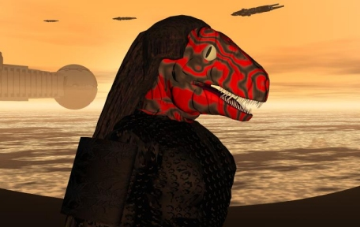

THE GRUNE Introduction and Physical DescriptionThe only bilaterally symmetrical bipedal race amongst the ruling races of the Empire, the Grune originated on Sstilik IV, a very dry planet in the Inner Suns. Reptilian in nature, their scale-covered bodies can be found in black, blue, green, and red hues as well as having a wide variety of stripes and other markings. Grune height ranges between 7 and 9 feet. The Grune have a strict hierarchical system. A Grune's caste and occupation for life is determined by the coloration with which they are born, and few Grune ever rise above or sink below the caste they are born to. The ruling caste of the Grune – those that take part in governance and trade leadership – are red-scaled with black stripes and swirls as decorations. Their natural patterning of swirls and stripes is often accentuated with cosmetics in order to provide indications of rank, position, or other social or occupational indicators. Senses and DietThe primary sensory apparatus of the Grune are two eyes which function independently of one another. Each provides a 135-degree field of vision on either side of the head; however, they cannot focus directly in front of or behind the head and provide no visual means of depth perception. Additionally, the Grune have a highly developed sense of smell, and a small organ inside of their mouths near the front provides heat and vibration sensitivity which allows them to sense minute variations of heat radiated by objects and beings in front of them as well as even the slightest movement. Grune communicate via speech, though their facial structure lends itself to more sibilants and fewer fricatives than other races with vocal capabilities. They are a carnivorous race, possessing two stomachs: one which is the repository for solid foods such as meats, and is capable of rendering bone as well as flesh into digestible portions; and a second stomach for the consumption and long-term storage of liquids such as water. The Grune will consume vegetation and plants, but not for the purposes of nutrition; such materials are stripped of what water or other liquid they retain by the secondary stomach and the solids are expelled as waste. ReproductionThe Grune have two sexes, male and female. There is no distinction between them in terms of societal importance or position. The females lay eggs in season (once a year) which are fertilized afterwards in the nest by the males. Children are raised by a caste (yellow-scales) of egg-tenders and child-raisers which do so with only the token participation of either parent. Children are raised until adulthood (which they reach at age 10) in creches with Grune of all castes; when they reach age 10, they spend three years with their parents before being expected to function as adults in their society. Grune life expectancy ranges between forty and ninety years. Culture and ArtGrune culture is primarily of a function-over-form nature. Their architecture is extremely barren and simplistic; for most of their racial history the Grune were nomads, and not given to producing permanent structures. Artistically, their primary form of artistic expression is the elaborate decoration of their scales as well as the variety of clothing and adornment they wear. Performance art is popular amongst the Grune, specifically in the form of martial displays and competitions of a physical nature. The Grune have much literature, mostly of a militaristic and combative nature, and musically, they prefer syncopated drum rhythms and other low-toned and rhythmic musical styles. The Grune do not profess any religions, nor do they believe in a higher power of any kind; what passes for religious affiliation amongst the Grune is devotion to the tribe or national group to which the individual Grune belongs. Society and HistoryThe Grune were the only native intelligent race on their homeworld. Grune of both sexes are powerfully built due to their high gravity original homeworld (2.0 g). Their history is one of aggressive intertribal warfare, with a number of their tribes fighting for domination across the deserts and lakes of their world. Over the course of several millennia, their constant nomadic and militaristic lifestyle led to a society with strict laws and punishments, a rigid rank and social hierarchy, and a great deal of competition between those of similar castes. Rising beyond oneís born-place in life is relatively unknown amongst the Grune, except in the case of some of their legendary figures. The near-simultaneous development of space travel technology in the home cities of three of the planetís largest tribes led to a rapid interstellar expansion by this nomadic race. Dominating native life on the planets they visited, and reveling in the conquest of new and different foes, the Grune developed a respectful peace among their own kind. While Grune will occasionally engage in ritual combats, and are certainly extremely competitive amongst their own kind, they no longer wage war on each other to the extent they once did. Their warlike tendencies between one another have instead led to a competition in the financial arena, and the Grune have become significant forces in the Imperial marketplace as a result. PsychologyWhile the temperament and personality of individual Grune vary greatly, there are certain traits which seem to be common to the race as a whole. They have a self-confidence bordering on arrogance in the eyes of many other races. Their opportunistic nature has led to the saying, "Never trust a Grune." Though the other races reap the advantages of the Grune's aggressive nature, they can also be intimidated by it. The Grune also display a notable awareness of the social station of those they are interacting with; they are often ingratiating to those in superior positions and disdainful of those in inferior positions to an extent that other races are not. Relations with Other RacesIYALI: (Rival) Of the three other major races in the Empire, the Gruneís primary rivals are the Iyali. The Iyali were the first of the Imperial races that the Grune encountered in the course of their aggressive interstellar expansion, and the first race that the Grune were unable to conquer and subjugate. The Grune are extremely envious of the Iyaliís technological prowess and abilities. As well, the extreme alienness of the two raceís biology (the Grune being from a dry, desertlike world and the Iyali being aquatic creatures from extremely wet worlds who live their lives almost entirely underwater) leads to a great deal of misunderstanding and conflict between the two races. SORVU: (Neutral) The Grune and the Sorvu systems are separated by a great deal of space, which is a good thing for the Sorvu, because if it werenít for the distance the Grune would have conquered them long ago. As it stands, the Grune only encountered the Sorvu during and after the formation of the Pax Imperium, when conflict between the major races of the galaxy was prohibited. The two races enjoy a relatively cordial relationship, though the Grune privately think of the Sorvu as little more than workhorses, beneath their notice due to the peaceful and nonmilitaristic nature of their personalities. THRILE: (Allied) The Thrile remain something of an enigma to the Grune, who never had any real knowledge of psionics before their introduction to this race. The Grune respect the Thrileís psionic capabilities as something outside of their own experience which may be an avenue to power. While the Grune attempted to research means of boosting their raceís own psionic talents, these researches have come to naught, and only through the use of Thrile-developed psionic booster biochemicals and Thrile-modified artifacts have the Grune managed to harvest the psi power of their own people. Because of this, and the Thrileís lack of a tactical mind at the level of the Gruneís, a mutual dependence has formed between the races and their relations are relatively warm.
|